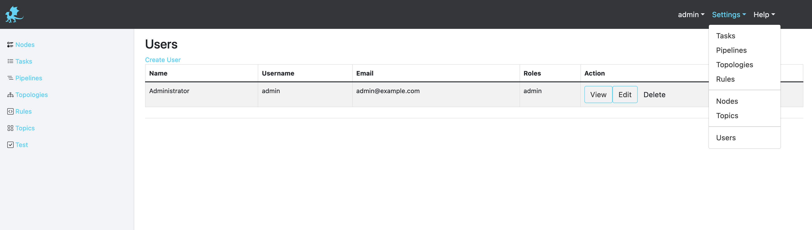
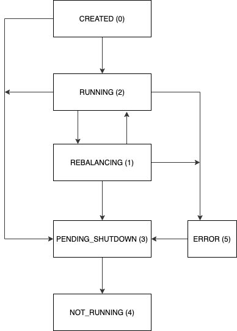
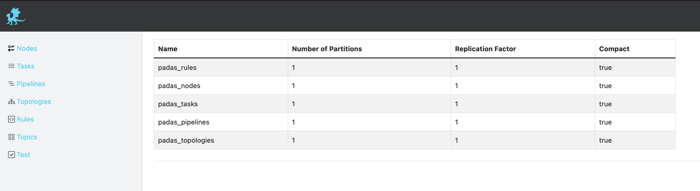

Management Configuration
Users
As an administrator user, you can view and edit all configuration items including user account settings. Currently there are 2 roles available for a user: admin and user, where user has read-only access to configurations. "Users" view can be accessed via "Settings --> Users" menu.

Nodes
Node Information table provides details on registered Padas engine instances.

Description of fields and state details can be found below.
| Field | Description | Example |
|---|---|---|
| UUID | Unique identifier for this instance. | 26ee88e3-a753-4c8b-9adf-e0432abbbded |
| Host | Hostname of the instance. | padas.local |
| REST | REST API endpoint where UI will connect to. | https://padas.local:8999 |
| Group | Consumer group associated with this instance. | default |
| State | Current state of this streaming application. See below table for details. | RUNNING |
State Details
Padas Engine is built as a Kafka Streams application and the state information is inherited from KafkaStreams.State. The following is a section from this link. Padas Engine instance must only be in one state at a time. The expected state transition is defined as:

NOTE: In order to reach a RUNNING state, you need at least 1 enabled Topology configuration that is assigned to the same group as the Padas Engine.
Topics
Topics view displays information on required Padas topics for storing configuration items. Details can be found in Topic Properties section in Admin Guide.
